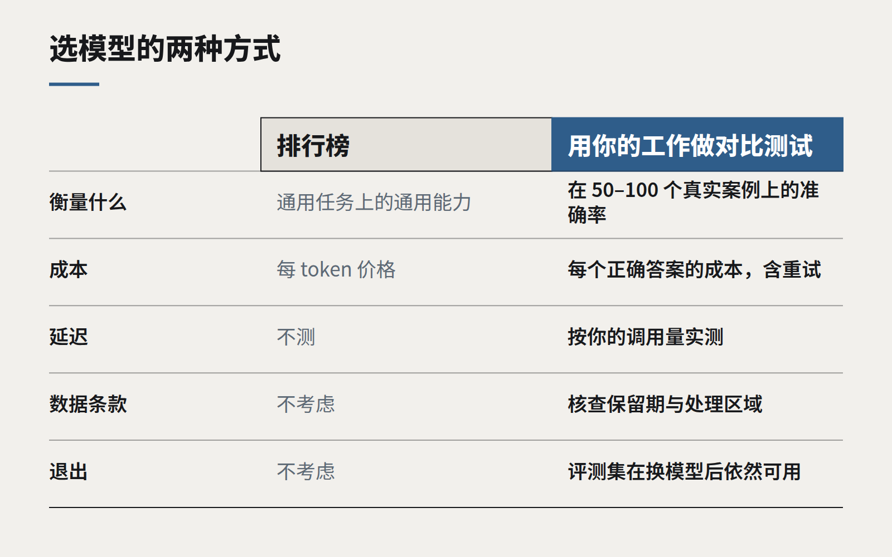

选 AI 模型，现在是一个采购决策
排行榜能告诉你哪个模型整体最聪明，却说不出在你的数据、你的隐私义务之下，哪个模型“答对一次”的成本最低。

一年前，客户最常问的是要不要用 AI。现在的问题变成了：用哪个模型、找谁买、按什么条款。这是另一类问题。它和技术的关系没那么大，更像你采购任何一样要在业务流程里跑好几年的东西。
我们最常见到的错误，是把选模型当成跑分比赛。团队看到某个模型在公开的推理测试上高了几分，就选它开工。半年后账单是预算的三倍，延迟让每个用户都不耐烦，法务又发现所有提示词在海外被保留了三十天。
跑分测不到的东西
公开基准测的是通用任务上的通用能力，而你的工作并不通用。一个擅长竞赛数学的模型，读一份新西兰租约、核对一张用了三种日期格式的供应商对账单，可能表现平平。
更关键的是，基准对决定模型能否在企业里用起来的四件事只字不提：
- 每个正确答案的成本。 不是每个 token 的成本。便宜的模型如果要重试两次再加人工复核，往往比一次答对的贵模型更贵。
- 在你的调用量下的延迟。 八秒出结果，放在夜间批处理里没问题，放在电话客服里就不可用。
- 数据去了哪里。 保留多久、是否用于训练、请求在哪个区域处理。对我们很多客户来说，2020 年《隐私法》和他们自己的客户合同，在任何工程师发言之前就已经替他们做了选择。
- 退出成本。 换一家供应商时，你的提示词、评测数据和工具链能保留多少。

用你自己的工作来比
签约之前，我们会做一次短的对比测试。拿五十到一百个真实任务样本，配上一个称职的人会给出的答案。让三四个候选模型来做——通常是一个大型前沿模型、一个中等模型，再加一个你可以自己部署的小模型。从准确率、成本、延迟和出错方式四个维度打分。
出错方式比大多数人以为的更重要。一个不知道就说“不知道”的模型，比一个自信地答错的模型好搭得多。准确率相同的两个模型，在这一点上可能天差地别。
这件事一周就能做完，不需要一个季度。它几乎总会改变最终选择，而那套评测集也会成为整个项目里最有价值的资产：明年新模型出来，你要靠它判断新模型对你来说是否真的更好。
合同要当回事地写
技术选型定下来之后，就像对待任何供应商一样对待它。读数据处理条款。问清楚推理在哪里运行、能不能固定区域。确认你测试过的模型版本能不能锁定，还是会在你不知情的情况下被悄悄升级。预算里要给价格上下浮动留出空间。
还要从第一天起就为“替换”做设计。提示词放进版本控制，评测集保持更新，在你的应用和供应商 API 之间加一层薄薄的隔离。你这个季度选的模型，两年后大概率不会还在用；但你为了选它所做的工作，应该比它活得更久。
合适的模型，是在你的工作上稳定答对、条款又能让律师签字的那个最便宜的模型。